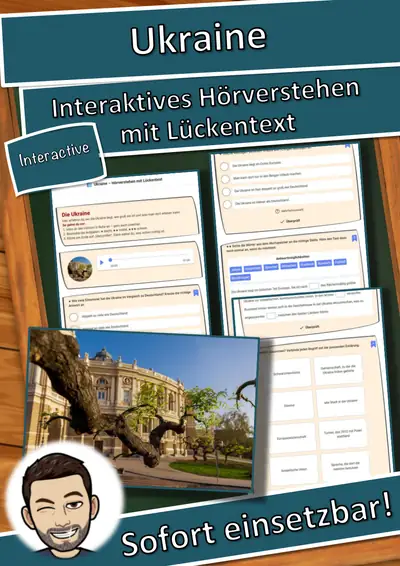

Suchsel zum Ukrainekonflikt - Krieg in der Ukraine - differenziert (Buchstabengitter)
KostenlosMaterial auf eduki ansehen
Mit dem Suchsel zum Ukrainekonflikt - Krieg in der Ukraine, erhalten Sie ein Suchsel mit den folgenden 10 Begriffen zum Einstieg, Erarbeitung oder Festigung des Themas:
Putin
Selenskyj
Konflikt
Flucht
Angriff
Nato
Russland
Sanktionen
Soldaten
Krieg
Das Suchsel ist 2-fach differenziert. Ich wünsche viel Freude mit dem Material!
FachDeutsch
KlasseKl. 5–10
SchulformSek I Mittlere Schulform
MaterialartUnterrichtsreihen, Arbeitsblätter, Stationenlernen, Mal- und Bastelvorlagen
Ähnliche Materialien

Suchsel Ukraine - differenziert (Buchstabengitter)

Kalter Krieg Lückentext mit Wortspeicher Hörverstehen und Suchsel

Ukraine – Hörverstehen mit Lückentext (interaktiv)

Ukraine Lückentext mit Wortspeicher Hörverstehen und Suchsel

Suchsel zu Osterbräuche - differenziert (Buchstabengitter)

Krieg Lückentext mit Wortspeicher Hörverstehen und Suchsel

Warum gibt es Kriege? - Homeschooling